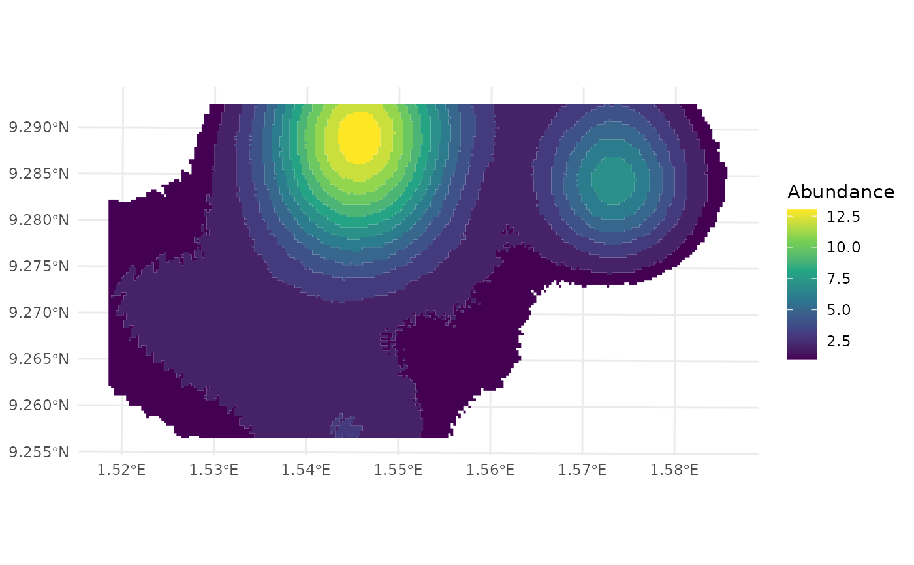

Calculate observed spatial coverage of species
mm_spatial_coverage.RdThis function calculates the Observed Spatial Coverage of a species like Home Range, but based on camera trap data. The term home range is typically associated with dynamic movement data, such as those recorded by radio-tracking or GPS devices, which provide continuous or near-continuous tracking of an individual animal's movements. Since camera traps are static and only capture presence/absence or activity within their specific locations, the concept of home range might not fully apply.
Usage
mm_spatial_coverage(
data,
site_column,
size_column = NULL,
longitude,
latitude,
crs = c(4326, NULL),
study_area = NULL,
resolution,
spread_factor = 0.1
)Arguments
- data
A data frame containing species occurrence records, including site, longitude, latitude, and optionally size (abundance).
- site_column
Column name specifying the site identifier.
- size_column
Optional column specifying the abundance of species at each site. Defaults to NULL, in which case counts per site are used.
- longitude
Column name specifying the longitude of observation sites.
- latitude
Column name specifying the latitude of observation sites.
- crs
A vector of length two specifying the coordinate reference systems:
c(crs1, crs2).crs1represents the current CRS of the data (e.g., 4326 for latitude/longitude).crs2represents the CRS to transform into (e.g., "EPSG:32631", a UTM EPSG code) for accurate distance calculations. Ifcrs2is NULL, no transformation is applied. Defaults toc(4326, NULL)
- study_area
An optional simple feature (sf) polygon representing the study area. If provided, the raster extends to cover the area.
- resolution
Numeric value specifying the spatial resolution (grid size) for rasterization.
- spread_factor
A scale factor for the half-normal distribution. Higher values create a more spread-out distribution, while lower values make it more concentrated. The value must be in ]0; 1]
Value
A list containing:
Coverage raster: A raster object representing species abundance across space.
Coverage stats: A tibble with spatial coverage statistics, including area (km²), average abundance, maximum abundance, and standard deviation.
Details
The function applies a half-normal kernel to model species abundance over space, using the scale rate to control the spread of the distribution:
$$\bar{K}(x) = \frac{\sum w * \text{e}^{(-0.5 * (\frac{x}{\sigma})^2)}}{N}$$
where:
\(\bar{K}(x)\) is the mean abundance kernel across all sites,
\(w\) is the species abundance at each site,
\(\sigma\) is the standard deviation of the spatial distance (scaled by spread_factor),
\(N\) is the total number of sites.
Examples
library(dplyr)
cam_data <- system.file("penessoulou_season2.csv", package = "maimer") %>%
read.csv() %>%
dplyr::filter(Species == "Erythrocebus patas")
spc <- mm_spatial_coverage(
data = cam_data,
site_column = Camera,
crs = "EPSG:32631", ,
resolution = 30,
spread_factor = 0.4,
size_column = Count,
longitude = Longitude,
latitude = Latitude
)
## Abundance stats
spc[[2]] %>%
dplyr::select(-1)
#> # A tibble: 1 × 4
#> `Spatial coverage (km²)` `Average abundance` `Maximum abundance`
#> <dbl> <dbl> <dbl>
#> 1 22.6 7 13
#> # ℹ 1 more variable: `Standard Deviation` <dbl>
## Plot spatial coverage
library(ggplot2)
spc_vect <- terra::as.polygons(spc[[1]]) %>%
sf::st_as_sf()
ggplot() +
geom_sf(data = spc_vect, aes(fill = Abundance), color = NA) +
theme_minimal() +
scale_fill_viridis_c()
